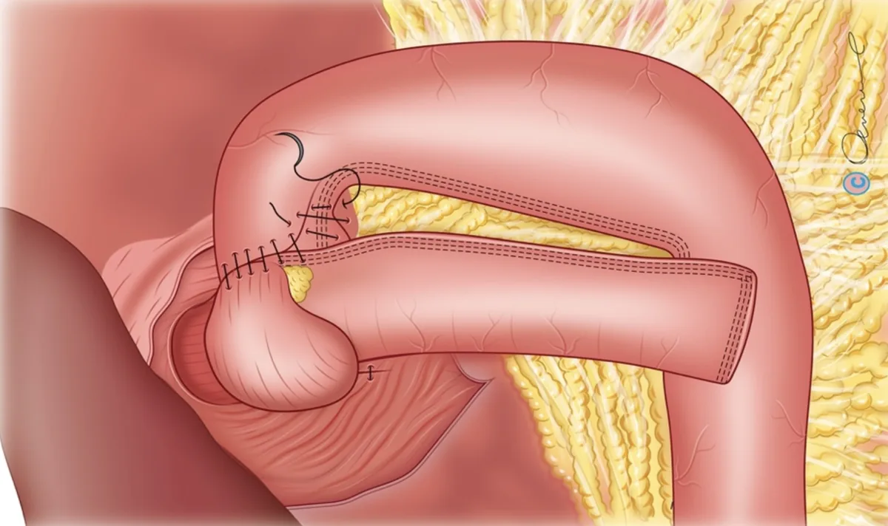

Авторский метод
ФундоРинг
Одноанастомозное гастрошунтирование с фундопликацией из исключённой части желудка. Метод разработан для пациентов, которым важно не только снижение веса, но и профилактика рефлюкса и позднего возврата веса. Выраженный антирефлюксный и антидемпинговый эффект.
Подробнее о методе